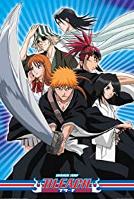
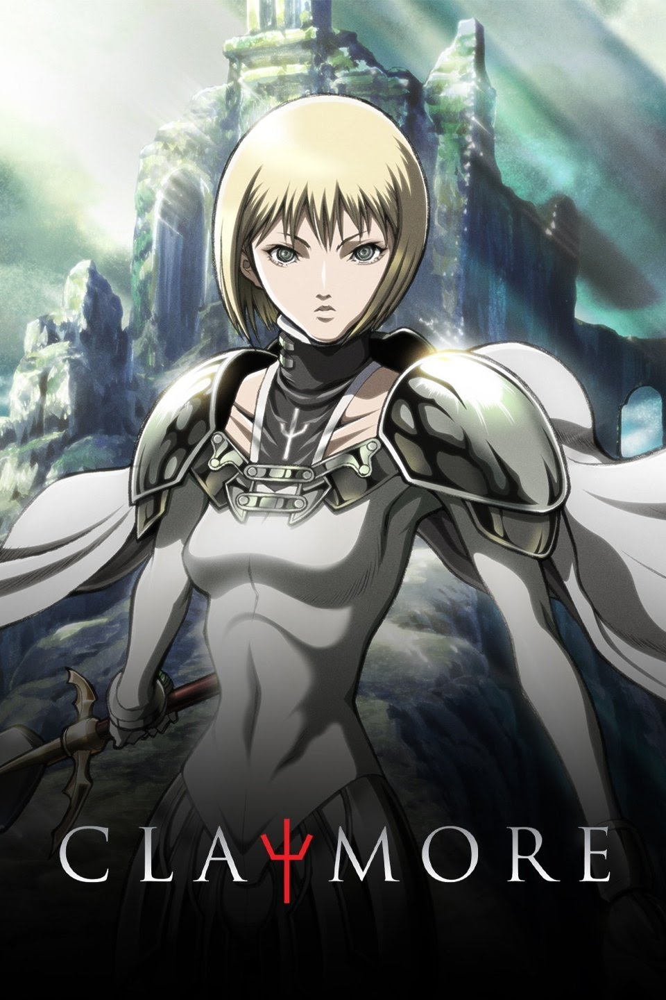
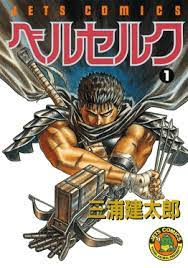

Top 1
attack on titan

It is set in a world where humanity lives inside cities surrounded by three enormous walls that protect them from the gigantic man-eating humanoids referred to as Titans; the story follows Eren Yeagerwho vows to exterminate the Titans after a Titan brings about the destruction of his hometown and the death of his
Top 2
jujutsu kaisen

Yuji Itadori, a kind-hearted teenager, joins his school's Occult Club for fun, but discovers that its members are actual sorcerers who can manipulate the energy between beings for their own use He hears about
Top 3
tokyo revenger

Hanagaki Takemichi lives an unsatisfying life right up until his death. Waking up 12 years in the past, he reckons with the eventual fate of his friends and tries to prevent an unfortunate future Takemichi
Top 4
one piece

focuses on Monkey D. Luffy, a young man made of rubber, whom, inspired by his childhood idol, the powerful pirate "Red Haired" Shankssets off on a journey from the East Blue Sea.
Top 5
bleach
It follows the adventures of the hotheaded teenager Ichigo Kurosaki, who inherits his parents' destiny after he obtains the powers of a Soul Reaper—a death personification similar to the Grim Reaper —from another Soul Reaper.
Top 6
black butler

A young boy sells his soul to a demon in order to avenge his family's death and successfully lead their influential toy manufacturing company. The demon takes the form of a loyal butler who's always dressed in black and is required to protec.
Top 7
demon slayer

A boy raised by boars, who wears a boar's head, boards the Infinity Train on a new mission with the Flame Pillar along with another boy who reveals his true power when he sleeps. Their mission is to defeat
Top 8
claymore
The series follows the adventures of Clare, a Claymore, or half-human, half-Yoma hybrid, and her comrades as they fight for survival in a world filled with Yoma, or shapeshifting demons.
Top 9
berserk
the story centers on the characters of Guts, a lone mercenary, and Griffith, the leader of a mercenary band called the "Band of the Hawk".
Top 10
blue period

Bored with life, popular high schooler Yatora Yaguchi jumps into the beautiful yet unrelenting world of art after finding inspiration in a painting. Bored with life, popular high schooler Yatora Yaguchi jumps.